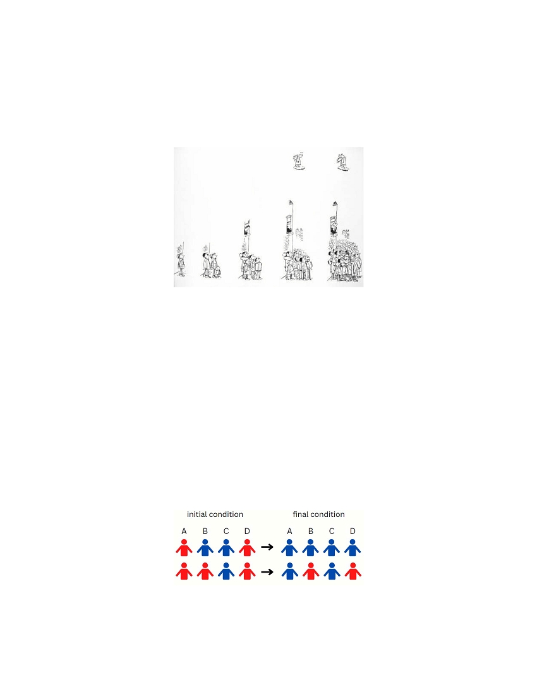
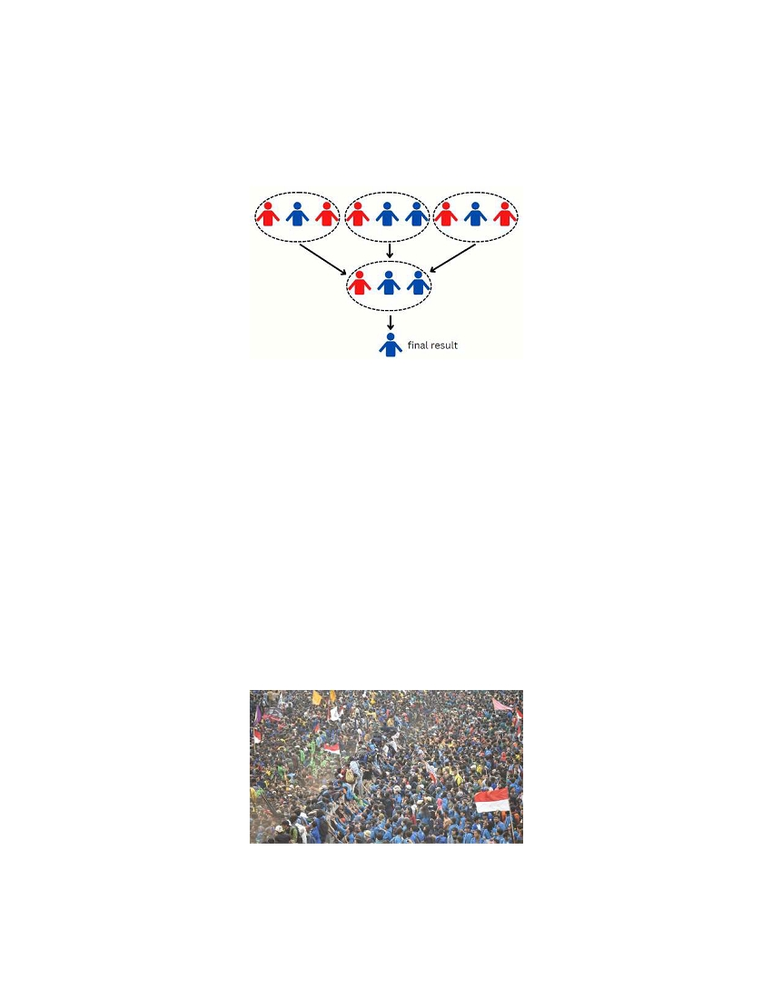

Beberapa dekade terakhir, para ilmuwan telah mencoba menelaah hubungan antara fisika dengan sosial. Apakah bisa? benar, tidak salah ucap bahwa memang sejauh ini ilmuan "dapat" menjelaskan fenomena sosial dengan kerangka konsep fisika. Mula-mula, sekitar tahun 1925 seorang fisikawan bernama Ernst Ising dan supervisor nya Wilhelm Lens mengembangkan teori feromagnetisasi yang telah dipublikasikan dalam bentuk Disertasi yang berjudul Beitrag zur Theorie des Ferromagnetismus [1]. Dalam disertasinya, Ising memperkenalkan suatu variabel diskrit $S = \pm 1$ yang merepresentasikan momen dipol magnetik atom yang dinamakan dengan spin. Ising mendeskripsikan modelnya pada kisi 1 dimensi dan mengamati bahwa tidak terjadi transisi fase. Model tersebut kemudian kita kenal sampai sekarang sebagai model Ising. Selanjutnya sekitar tahun 1944 Lars Onsager mengembangkan model Ising pada kisi dua dimensi dan menemukan secara eksak titik kritis yang membuat sistem mengalami transisi fase [2]. Penelitian selanjutnya menemukan bahwa fenomena semacam ini relatif lebih mudah dipelajari dengan simulasi numerik, misalnya dengan menggunakan metode Monte Carlo dan algoritma Metropolis [3].
Sebagai gambaran terkait fenomena transisi fase, dalam kehidupan sehari-hari kita dapat mengamati perubahan bentuk zat, seperti proses pembekuan dari cairan (air) ke solid (es) pada suhu tertentu (sekitar $0$ derajat celcius). Dapat dikatakan bahwa, pada fenomena semacam itu, pada suhu di atas $0$ derajat celcius molekul H20 bergerak bebas di dalam air, akan tetapi ketika suhu mengecil dan mendekati $0$ derajat celcius, molekul H20 akan "terikat" satu sama lain membentuk es, yang mengindikasikan bahwa suhu kritisnya berada pada suhu $0$ derajat celcius.
Lanjut, dari fenomena model Ising ini, para ilmuwan kemudian memperoleh suatu pencerahan, dimana dengan interaksi sederhana semacam itu memunculkan fenomena makroskopis yang dapat kita amati seperti ada transisi fase dari dua keadaan seperti feromagnetik-antiferomagnetik atau sebaliknya yang “dipisah” oleh suatu titik kritis tertentu. Konsep ini kemudian diterapkan untuk mengamati fenomena sosial seperti bagaimana terjadinya konsensus dan status-quo di tengah masyarakat. Untuk mengamati semacam itu para ilmuwan membuat suatu model yang menjelaskan interaksi sosial. Model semacam ini biasa dikenal dengan model dinamika opini. Model dinamika opini mendeskripsikan suatu aturan interaksi antar individu tunggal di dalam suatu populasi. Pemodelan ini biasanya didasarkan pada pengamatan, pengalaman atau intuisi yang masuk akal dan dirumuskan dalam suatu formulasi matematis. Sebagai contoh model dinamika opini yang cukup terkenal di kalangan sosiofisikawan adalah model Sznajd yang menggambarkan salah satu fenomena sosial yakni validasi sosial seperti yang ditunjukkan pada Gambar 1.

Gambar 1: Ilustrasi fenomena validasi sosial berdasarkan model Sznajd. Ditunjukkan bahwa mula-mula seorang melihat ke atas, kemudian orang disekitarnya terpengaruh dan turut melakukan hal yang sama, begitu seterusnya yang pada akhirnya semua berada pada kondisi yang sama, yakni sama-sama melihat ke atas.
Validasi sosial merupakan suatu fenomena di mana suatu individu akan mengikuti atau menyetujui apa yang individu lain lakukan, terlepas motivasi dibelakangnya. Jika kita berbicara opini, maka tentu saja efek dari validasi sosial ini menghasilkan opini bulat atau kesepakatan penuh. Singkatnya model Sznajd adalah sebagai berikut, jika ada dua individu katakanlah si B dan C, mempengaruhi dua individu tetangga si A dan D, maka si A dan D akan mengikuti si B dan C jika mereka memiliki opini yang sama (sepakat), jika tidak, maka si A dan B akan membentuk pola polarisasi yang menunjukkan bahwa kedua mereka tidak mengikuti opini B dan C [4]. Ilustrasi model Sznajd ditunjukkan pada Gambar 2.

Gambar 2: Ilustrasi model Sznajd satu dimensi, sebelum dan sesudah berinteraksi.

Model opini yang lain yang cukup terkenal adalah model aturan mayoritas yang dikembangkan oleh Galam [5]. Model ini menyatakan bahwa jika ada sekelompok kecil orang berinteraksi atau bertukar pendapat di tengah masyarakat, maka opini mayoritas yang akan menang. Ilustrasi model aturan mayoritas ditunjukkan pada Gambar 3.

Gambar 3: Ilustrasi model kaidah mayoritas untuk interaksi tiga agen yang dipilih secara acak di dalam populasi.
Mungkin banyak yang tidak setuju dengan konsep sederhana ini, tidak mengapa, penulis juga sepenuhnya tidak setuju mengingat secara psikologi manusia itu sangat kompleks dan secara alamiah sulit untuk diatur, bukan seperti partikel yang merupakan benda mati dan entitas sederhana, akan tetapi ada kalanya manusia pada suatu keadaan tertentu, "secara spontan" memiliki perilaku mirip seperti partikel yakni terbentuk perilaku seragam atau keteraturan yang cukup menakjubkan seperti yang ditunjukkan pada Gambar 4 . Terlepas latar belakang mereka yang berbeda dan dorongan psikologi pada setiap individu, para demonstran pada kondisi tersebut memiliki rasa, opini atau keadaan yang sama karena suatu keadaan yang memaksa mereka untuk demikian. Serge Galam seorang sosiofisikawan mencoba menjelaskan fenomena semacam ini dalam buku sosiofisikanya [6].

Gambar 4: Suatu fenomena demonstrasi yang menggambarkan suatu keadaan dimana semua demonstran memiliki pendapat, perasaan, atau tujuan yang sama terhadap suatu masalah tertentu, terlepas mereka dari berbagai latar belakang yang berbeda [Kompas].

Kecenderungan individu menjadi serupa disebabkan oleh adanya interaksi, semakin sering individu berinteraksi semakin besar kemungkinan untuk menjadi mirip. Begitu sebaliknya, semakin jarang individu berinteraksi, heterogenitas akan semakin tinggi. Efek semacam ini dinamakan sebagai pengaruh sosial. Fenomena secam ini secara alamiah kita temukan pada model Ising, yakni interaksi spin mengakibatkan spin menjadi homogen disebabkan oleh kopling fermogantik natar spin yang berdekatan. Adapun fenomena antiferomagnetik pada model Ising memiliki perilaku irisan dengan perilaku individu yang dinamakan sebagai individu anti konformis, yang merupakan suatu istilah psikologi sosial yang menjelaskan suatu perilaku atau keadaan individu yang selalu bertolak belakang dengan perilaku orang lain [7]. Perilaku semacam ini menarik untuk dikaji karena memiliki fitur-fitur yang sama dengan fitur-fitur pada fisika statistik.
Referensi
[1] Ernst Ising, Contribution to the Theory of Ferromagnetism
[2] Lars Onsager (1944), Crystal Statistics. I. A Two-Dimensional Model with an Order-Disorder
Transition, Physical Review.
[3] Metropolis, N., Rosenbluth, A. W., Rosenbluth, M. N., Teller, A. H., dan Teller, E. (1953).
Equation of state calculations by fast computing machines. The journal of chemical physics , 21 (6),
1087-1092.
[4] Sznajd-Weron, K., & Sznajd, J. (2000). Opinion evolution in closed community. International
Journal of Modern Physics C , 11 (06), 1157-1165.
[5] Galam, S. (2008). Sociophysics: A review of Galam models. International Journal of Modern
Physics C , 19 (03), 409-440.
[6] S. Galam, Sociophysics: A Physicist's Modeling ofPsycho-political Phenomena (Springer-
Verlag, New York, 2012).
[7] Nail, P. R., MacDonald, G., & Levy, D. A. (2000). Proposal of a four-dimensional model of
social response. Psychological bulletin , 126 (3), 454.